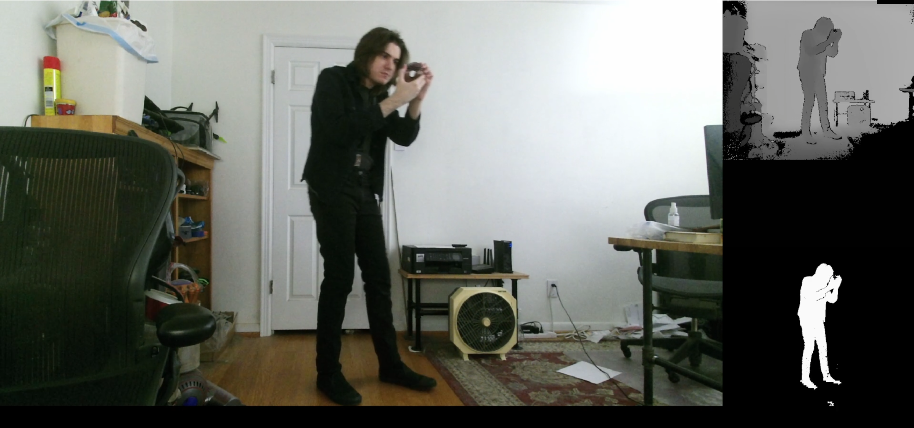

s&box (c#)
Animgraph 3
The current state of animgraph in s&box isn't great, animgraph 2 is still to my knowledge a ways off, and I needed animgraph for some projects. So I'm in the process of making my own version of animgraph.
Custom node editor, live editing, ect.
(User interface isn't done yet, it's missing some docks)
The entire animation system here is custom, as is the editor. I've split it into 2 main parts, an Animgraph class that represents the file and an Animator class that uses the file to animate
a SceneModel or SkinnedMeshComponent. These seperations allow for both the file and the model to be changed while the animgraph is running without affecting the state of the graph, so
the animgraph can run at all times while in the editor and respond instantly to changes. Additionally the vmdl can be swapped out at any time without disrupting the graph (assuming the models have comparable animations
and whatnot).
State Machines, decent system for conditions
(Ignore that none of the GUI elements for the states and transitions are rendering properly)
None of the nodes are hard coded, they are declared with attributes and loaded dynamically when the user right clicks to select a node. This means adding new nodes requires very little effort. The state machine nodes also
demonstrate the ability to define custom editors (activated by double clicking the node) for specific node classes. These editors are defined as a Widget with an attribute that declares the editor as belonging to
a specific node.
Parameter classes
I've always found it to be an annoyance that there isn't really any good way to coordinate parameters between animgraph and code, it always felt a bit messy to just hope that whoever is setting up the animgraph gets the names
correct. To fix this I've created a system in which the Animator can create an instance of a class, and anything marked with [Property] inside the class is exposed to animgraph as a parameter. Then
in code you can simply edit values in the instance directly instead of trying to set them by name.
s&box (c#)
Untitled movement shooter
Recent project meant to get some of that play fund money, very early in development.
Kick
Nothing too special, the knockback force is code I wrote back in like 2020 for Vance. All that kicking of walls gives ample time for close inspection of the walls, though, which I feel look quite stylish.
View bob
The general vibe I want for the project is 'bull in a china shop'. The player should be fast and powerful but feel heavy, and as such I opted for fairly extreme camera effects. The view bob here is fully procedural, making some effort to copy how it looks in mirrors edge.
There's also a slide in there, inspired by the Vance slide. Was a lot easier to implement using my movement code than it was with the Valve code.
World Shader
I wanted the visuals to appear very dark, slightly 2000s, and with as much grit as possible. To that end I created a shader with point sampling, extreme application of the ambient occlusion texture, a custom lighting model with phong shading, and self-shadowing.
Fake AO Strip Application Tool
On top of the very strong local ambient occlusion in the textures I wanted some nice strong ambient occlusion to tie the faces together. The original plan was to use the SSAO implementation that already exists in s&box but at extreme strengths it's limations were a bit too obvious, so I opted for fake ambient occlusion using strips of geo with a custom shader. I also made a script to apply them to scene meshes for the sake of convenience.

s&box (c#)
Point And Click Adventure Demo
The end result of playing Riven and thinking it looks pretty cool, a set of graphical effects meant to emulate prerendered graphics. Also a winnder of the s&box tech jam. I really enjoy projects like these that are just an endless series of cool graphical challenges.
Prerender shaders and rendering
Some would say the most important part, the game is rendered at a low resolution once each time the camera movees and optionally at 15 frames per second. The first render is used as the static view for each scene and the second is used for the FMV elements. During the render, the static render is treated to slightly inaccurate (intentionally) ACES color grading, bit reduction, and Bayer dithering. The FMV render is treated to the same ACES color grading but with some distortion in the colors to give the classic greenish look, slight bit reduction, a blocky compression effect, and a copy of the last frame is used to apply an additional layer of fake video compression. These textures are rendered to the screen with an additional set of shaders that handle the cropping for FMV videos as well as the transition effects with switching angles. (colors in the image have been boosted so that the effects are more visible)
Bounds detection
To acheive the cropped effect for FMV elements screenspace bounds must be determined for each animated element. The tricky part is that the bounds need to be cropped closely to exclue anything not visually moving on screen, so traces are required to ensure the bounds dont include parts of the object that are behind walls. Initial implementations were using several thousand traces, the final implentation only uses up to 240 something. I'm sure this could be optimized further but due to the nature of the game a 2ms spike when animated objects start moving isn't noticable.
Bounds detection and prerender shaders in action
Additional FMV bounds are added here to ensure the bloom effect doesn't get clipped off on the edge of the door, and are also placed anyhwhere with moving shadows.
Spline chain and pulley
From the first iteration of pacad, a chain that procedurally follows a spline path and a pulley that procedurally rotates to match the changing length of the spline.
Kinect hologram effect
Another leftover from the first iteration, and an effect I really should have used for the ending of pacad. A video containing color depth and mask information is fed into a shader. Seems like a nice effect and wasn't all that hard to set up, makes me wonder why games don't do this sort of thing from time to time. Pretty cheap to render too.
Water ripple effect
To be honest pacad and its first iteration were just excuses to make a bunch of cool shader effects and scenebuilds.
s&box (c#)
Crimson County Forest Service
Lethal company clone but cool, a full scale project
Generic FPS gameplay systems
This whole project is coded in such a way that all of its core player systems can be repurposed for other games, such as the previously mentioned untitled movement shooter.
HL1 Software rendering
The graphical effects and shaders here are meant to mimic Half Life 1 in software rendering mode. The effects include point sampling, a custom lighting model on world geometry, and bit reduction across the entire screen. Dynamic objects have slight vertex snapping and are lit uniformally from a single point in an attempt to replicate the entity lighting in HL1. Decals are aligned to the underlying surace in such a way that they align to the pixels of the surface, an effect which I found to be one of the cooler parts of the software rendering.
Pose correction tool
I had a bunch of mocap that needs to hit specific poses to be used in the game so I made a little tool to do that. s&box has a really nice api so I find myself using it for most issues that I would previously have solved using blender scripts.
Lightmap resolution lights
HL1 renders dynamic lights to the lightmap (I think? Idk what it does exactly) so they appear in game at a noticably lower resolution. To acheive this I feed in dynamic lights to the shader and render them seperately from normal lights, linearly interpolating between 8 positions to get the low res interpolated texture effect.
s&box (c#)
Image Sequence Renderer Tool
Nothing too fancy but I needed a tool to render acene to image sequences with nice consistent framerates so I made one.
Renders Images
It'd render video but the video writer class in s&box has its constructor marked as internal lol
This plus movie maker might be pretty nice.
s&box (c#)
Concert (midi operated band)
Large set of procedural systems to bridge the gap between motion capture from a guy that doesn't know how to play any instruments and a full band performance. Will end up rendered out and uploaded to youtube eventualy.
Procedural drums
I haven't a clue how to play the drums, so the goal here is to start with mocap of me not playing the drums and then apply procedural stuff until it looks like I can play the drums. The system is fed midi notes, then it has to figure out which stick it should use for each note (this is easier said than done) and procedurally animate the drum sticks to hit them.
s&box (c#)
SBFM
A perhaps misguided attempt to recreate s2fm 1:1 in s&box
User interface
I've come around to movie maker and have no real plans to finish this, but in making it I learned enough about the editor stuff to be able to easily make tools in s&box, which has proven useful on many an occasion. I went from doing AI logic in animgraph to writing vscript like 4 years ago and have since developed that thing programmers get where they focus way too much time and energy on user experience for tools that only they are going to ever touch.
s&box (c#)
Untitled bioshock ripoff
There was a while where I didn't have any good ideas so I did this instead, acted as a good testing ground for various tech, most of which isn't all that visually interesting.
Npc weapon systems
Another thing that's more complicated than it looks, this game gave each npc like 5 different places to store weapons, they could dual wield, ect. so it ended up with a fairly in depth system to keep track of their guns and bludgeons and to spawn them with a reasonable loadout.
You could also steal holstered weapons
Kinda cool feature idk
Cigarette shader
This whole project is just a series of cool fairly unrelated little bits of tech. Kinda all it was supposed to be really
Ocean window
Based vaugely on the glass shader but I replaced most of it, it renders the view from a second camera, ensuring skybox stuff and game stuff don't get all mixed up. Not sure it was worth the performance cost but at the same time it's no worse than something like planar reflections.
Half Life: Alyx (lua)
Anticitizen
The best Half Life: Alyx mod never made, a tour de force of vscript, a project with a singular goal of being extremely ambitious and delivering on it. Met its end when all the level designers disappeared. Might port the whole thing to s&box at some point.
Custom NPCs
With the impression that the existing HLA npcs don't move around enough and are kind of boring, and with the general annoyance at needing to constantly work around the behaviours of the existing npcs, I figured it would be easier just to make new npcs from scratch. These are those npcs, sporting custom AI logic using a system similar to the schedules used by valve, a reimplementation of the hl2 sentences system, dynamic targeting with accuracy and specific targeting profiles per npcs (targeting profiles controlled aiming position based on range and enemy health), lookat with various points of interest and categories and cooldowns and whatnot, targeting for grenades to hit groups of enemies, ruidimentary squad tactics, really just as much stuff as I could think of. I spent like 2 years doing nothing but just adding random stuff to them. As is typical for projects fueled by endless ambition and inability to settle for less than perfection they still aren't finished yet.
Custom weapons
Same as the npcs really, ironically vscript shows its limitations much more dramatically with the weaponry than it did with the npcs, all the handposes are a huge pain to deal with in vscript. I can imagine acheiving the same result in like 3 days in s&box.
Injury config
At some point the npcs needed fully custom hit detection, I forget why. When I did it I figured it'd also be cool to add a bunch of extra hitboxes that do things like blowing up their radios. Just for fun that reduces their comunication range to 128 units.
Dual wielding
We cut this but it's kinda cool. As a result of how Half Life: Alyx deals with animgraph tick rates it was way harder to implement than it looks.
HTML (javascript)
Isogame
Browser game, based vaugely on the style of Fallout 1. No libraries or anything just javascript and divs. HTML is suprisingly nice to work with as a 2D game engine.
Isometric game
Rendering out all the animations for this wasn't fun, if I were to do it again I'd do it in s&box and render all the sprites at runtime.
Source SDK 2016 (c++)
Vance
Zombified HL2 mod I worked on for a few years, then it died for a few years, then it came back and I worked on it for a few more years, then it died again, then it got taken over and disfigured. Storied history of drama and betrayal.
Assorted Gameplay Mechanics
Another mod that I worked on for a long while. Was pretty cool other than how it self destructed every like month.
Specific things I worked on here include:
- Significant polish on slide mechanic
- Quick grenade throw
- Significan polish on health stim and tourniquets
- Kick mechanic
- Vaulting plus polish on other types of climbing
- Viewmodel offsets for various actions
- Bunch of other assorted fixes and polish